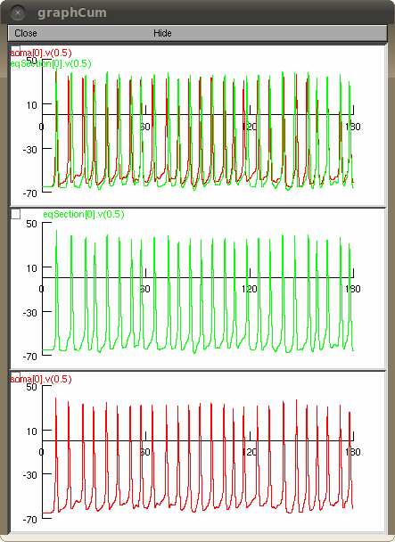

NEURON files from the paper: Fast and accurate low-dimensional reduction of biophysically detailed neuron models A. Marasco, A.Limongiello, and M.Migliore (2012). Sci. Reports 2:928:1-7 http://dx.doi.org/10.1038/srep00928 Usage: Compile the mod files and run REDUCTION1.0.hoc for the main simulation or MaxStimPROCEDURE1.0.hoc for the estimation of the maxstim parameter for a specific morphology to use in REDUCTION1.0.hoc The REDUCTION1.0.hoc simulation file allows to play with the method's parameters (see SoftReduction1.0.doc). Example run: After the simulation starts press the "Run the Full & Reduced Models" button, then select geoc70863.hoc in the morphologies folder, the simulation will reproduce the traces in Fig.1B (left) of the paper:  Written by A. Limongiello, 2012 Questions should be addressed to michele.migliore@cnr.it